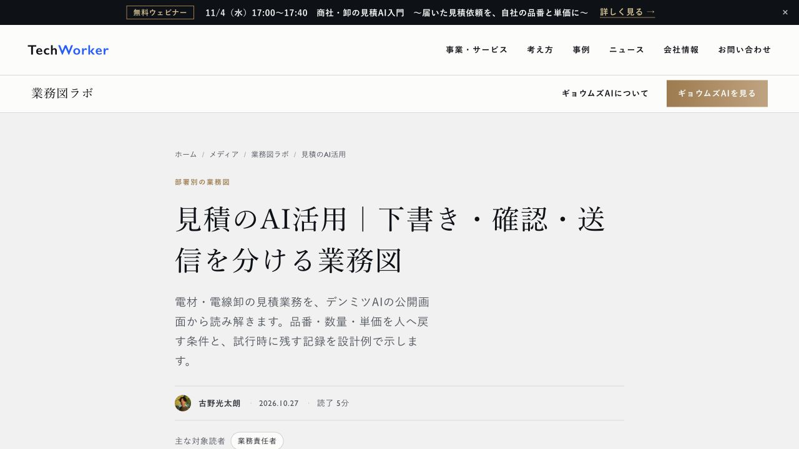

原稿の合格から、実サイトの表示確認まで進める
原稿の審査が済んでも、公開先に反映される前に止まると、読者には届きません。TechWorkerでは審査と公開、その後の表示確認を一続きの仕事にしています。
次は2026年10月27日に公開した見積業務の記事です。自社の制作物として、タイトルと冒頭を示しています。

この画面から、記事のタイトルと公開日、対象読者を確認できます。画面に写っている範囲だけでは、記事末までの表示やスマホの状態は分かりません。
10月27日の実行記録にはサイトへの反映成功と、PC・スマホの表示確認を別々に残しています。本文の表示、画像の読込、横にはみ出さないことを確かめました。記事中と記事末の申込み先も確認しています。
書くAI、審査するAI、公開を確かめるAIの仕事を分ける
題材選びと執筆の後に、独立した審査を置きます。合格した原稿を反映し、実際の公開URLで表示を確かめます。

対象は業務図、研修・導入、士業、インタビュー、セキュリティの5媒体です。平日の1回の実行で扱う記事は1本です。題材は自社の実記録か、Xで観測して公式資料を確かめた最新情報から選びます。
自社の数字は題材の需要や既存記事との重複を確かめる補助に使います。検索語だけで一般的な解説を増やさず、同じ問いに答える記事があれば更新に回します。
本文を審査してから、表紙と必要な説明図を作ります。画像と本文を照合した後、許可された記事・画像・一覧などの変更だけをサイトへ反映します。
この業務図は公開物と実行記録を基にした担当の整理です。AIの担当を分けた図であり、人間が毎回すべてを承認する流れではありません。
完了の記録に、URL・反映版・実画面の結果を残す
10月27日は、GitHubで原稿の変更を統合し、サイトへの配信処理の成功を確認しました。その後、公開した記事をPCとスマホで開いています。
配信処理の成功は公開先へ送る工程の確認です。実画面では本文と画像が読めるか、申込みの案内が見えるかを確かめます。両方の記録を同じ記事に結び付けます。
次の表は10月27日の記録から抜き出した項目です。公開URLと反映した版、画面の結果を同じ記録に残しています。
| 記録する項目 | 10月27日の記録 | 確認する仕事 |
|---|---|---|
| 公開URL | 見積のAI活用の記事URL | 別の記事を見ていないか確かめる |
| 反映した版 | 変更の統合番号175、配信処理40423858002が成功 | 審査した原稿が反映されたか確かめる |
| PC・スマホ | PC幅1,365px・スマホ幅390px。本文と画像を表示、横はみ出しなし | 画像を含めて末尾まで読む |
自動検査では、本文が透明になっていないか、画像を読み込めたかも調べます。画像はスクロールして読み込むものも含めて確認します。画面幅を変えたときは、実際の表示幅も記録します。
この1回の公開は無人運用の成功率や時間の削減を示す結果ではありません。記事の閲覧、申込み、売上は公開の確認とは別に測ります。
止まった工程と、再開できる条件をそろえる
代表は、品質に合格した記事と画像を公開する範囲を、継続して承認しています。公開前に毎回承認を求める手順は置いていません。止まった回は、工程・原因・再開条件を代表へ報告します。方針を変える判断は代表が行います。
根拠不足、画像の権利の懸念、記事の重複、表示の不具合があれば止めます。認証、課金、秘密情報、サイトの経路設定が変更に混ざった場合も、通常の記事公開として進めません。
取得できない計測項目は未取得として残します。計測の不足だけを理由に、根拠と品質がそろった記事の公開を止めません。数字による成果の判定は取得できるまで保留にします。
再開の報告は「画像を直したら、公開URLでPC・スマホの表示を再確認する」のように書きます。本人のログインや公開許可が要る場合は、その操作だけを分けます。権限のあるAIが直せる不具合は、任された範囲で直します。
最初は既存記事の更新で引継ぎを試す
自社で試すなら、公開済みの記事を1本選び、更新する範囲と担当を決める方法を提案します。新しい記事を増やす前に、審査から表示確認まで通せるかを確かめます。
始める前に、使ってよい資料、変更してよいファイル、審査の条件を決めます。契約や顧客情報を含む資料は、公開できる範囲を確かめてから渡します。
業務図には、AIが読む資料、作る原稿、審査で戻す条件、公開後に確かめる物を記入します。最後に、止まった工程の担当と次の確認先を書きます。これで、誰が何を引き取るかを確かめられます。
出典と確認できた範囲
- 記事の調査から公開まで、AIが平日に進めます。TechWorkerの公開済み事例。2026年10月20日公開、10月29日確認。
- 10月27日に公開した見積業務の記事。自社の公開物。10月29日確認。
- 10月27日のサイト配信処理の記録。成功を確認。PC・スマホの検査結果は同日の自社運用記録と照合しました。
自社の公開手順と10月27日の確認結果を紹介しています。他社で試す順序は、TechWorkerの提案です。顧客の声、時間の削減率、申込みの増加は主張していません。